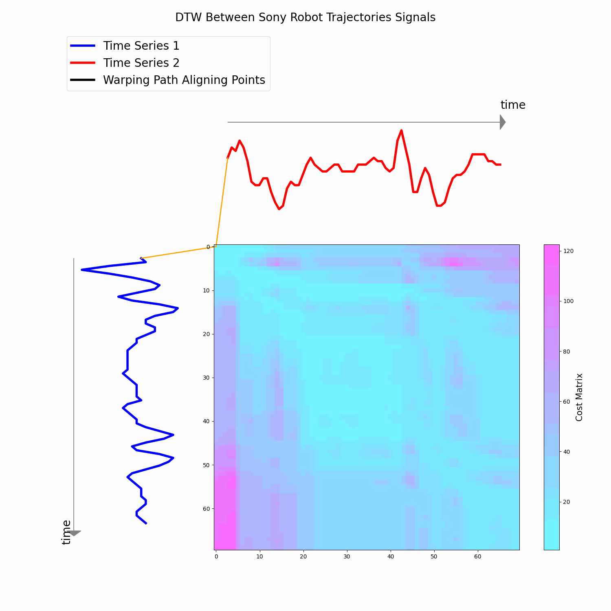
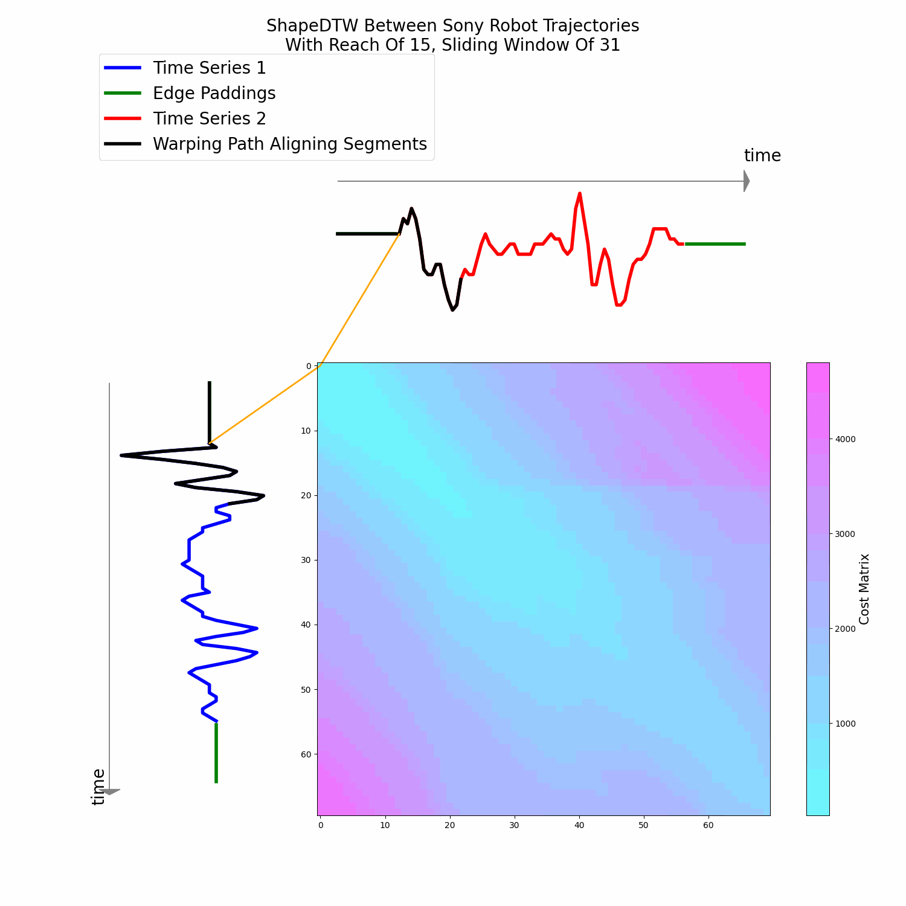

Dynamic Time Warping (DTW) is a similarity measure between time series that aligns sequences by warping the time axis to minimize the distance between them.
Formally, the DTW distance between two sequences \(\mathbf{x_1}\) and \(\mathbf{x_2}\) is calculated as:
\[ DTW(\mathbf{x_1}, \mathbf{x_2}) = \min_{\pi \in \mathcal{A}(\mathbf{x_1}, \mathbf{x_2})} \left( \sum_{(t_1, t_2) \in \pi} d(x_{1,t_1}, x_{2,t_2})^q \right)^{\frac{1}{q}} \]
where \(\pi\) is an alignment path and \(\mathcal{A}(\mathbf{x_1}, \mathbf{x_2})\) is the set of all admissible paths.
For more details, visit An introduction to Dynamic Time Warping.
Below we present an example using two time series of the SonyAIBORobotSurface1 dataset of the UCR Archive. The below figure consists on the DTW cost matrix and the warping path that optimally aligns both series point by point.
In Zhao and Itti 2018, a variation of DTW was introduced, which aligns transformations of sub-sequences within time series instead of aligning all time series simultaneously. This approach aims to maintain the consideration of neighborhood structure when aligning timestamps across different time series. To define ShapeDTW mathematically, let \(\mathcal{F}\) be a descriptor function, \(\mathbf{x_1}\) and \(\mathbf{x_2}\) be two univariate time series of lengths \(L_1\) and \(L_2\), respectively.
The process begins by extracting sub-sequences of length \(l\) (referred to as reach) from \(\mathbf{x_1}\) and \(\mathbf{x_2}\), denoted by \(\mathbf{x_1'}\) and \(\mathbf{x_2'}\), forming two multivariate time series of shapes \((L_1, l)\) and \((L_2, l)\), respectively. Next, descriptors are extracted from these sub-sequences using \(\mathcal{F}\), resulting in \(\mathbf{D_1} = \mathcal{F}(\mathbf{x_1'})\) and \(\mathbf{D_2} = \mathcal{F}(\mathbf{x_2'})\) of shapes \((L_1, d)\) and \((L_2, d)\), respectively, where \(d\) represents the target dimension.
The DTW alignment path is then computed on the transformed version of the series \(\mathbf{D_1}\) and \(\mathbf{D_2}\), followed by the optimal path being transferred onto the original series space to calculate the measure between the original time stamps instead of the sub-sequences. In this manner, the DTW algorithm will calculate the distance between time stamps following their neighborhood alignments. The ShapeDTW measure can be formulated as the following optimization problem:
\[ ShapeDTW(\mathbf{x_1}, \mathbf{x_2}) = \left( \sum_{(t_1, t_2) \in \pi^*} (x_{1,t_1} - x_{2,t_2})^q \right)^{\frac{1}{q}} \]
where \(\pi^*\) is the optimal path obtained by the DTW alignment path between transformed series as follows:
\[ \pi^* = \arg \min_{\pi \in \mathcal{A}(\mathbf{D_1}, \mathbf{D_2})} \left( \sum_{(i, j) \in \pi} ||\mathbf{D_1}_i - \mathbf{D_2}_j||_q^q \right)^{\frac{1}{q}} \]
Below we present an example using two time series of the SonyAIBORobotSurface1 dataset of the UCR Archive. The below figure consists on the ShapeDTW cost matrix and the warping path that optimally aligns both series segment by segment.
ShapeDTW can outperform DTW in scenarios where the shape of the sequences is crucial for accurate similarity measurement. By focusing on shape features, ShapeDTW is more resilient to noise and amplitude variations, leading to more reliable results in many practical applications. This can be seen in the first figure at the top of the webpage where ShapeDBA avoids generating out of distribution points because of the shape alignment.